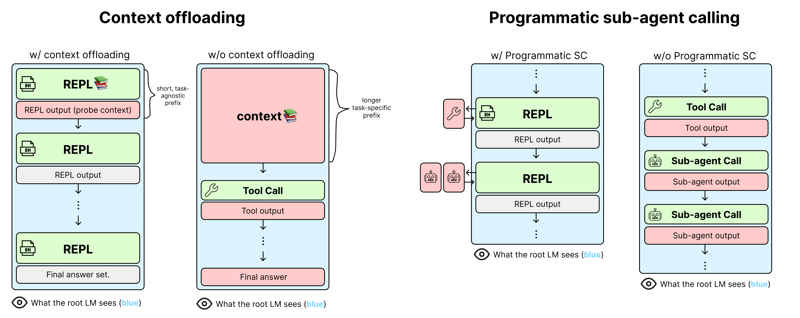

核心判断
alphaXiv 原帖把这项工作概括为“把 generalization 重新定义成 harness design 问题”，方向上抓得很准，但需要补上证据等级：主材料是 2026-07-20 发布的实验博客，不是同行评审论文。它给出的现象可信且重要——Qwen3-30B-A3B 只在短任务上做 RL，装进 RLM 后能迁移到 8–32 倍更长的同结构任务，也能在三组表面领域不同、分解方式相同的任务间迁移——但机制解释仍是待验证假说。
真正学的是控制策略
根模型不直接吞下全部材料，而是学习检查变量、切块、调用子模型、过滤、聚合和提交答案的程序化轨迹。
10× 不是准确率倍增
它是六个任务相对各自 step-0 的平均 held-out lift 之比，图末段约 0.42 对 0.04；不能读成最终得分高十倍。
LID 还没有被直接测量
文章用根轨迹的编辑距离、n-gram 与长度相似度作代理，没有测 prompt 条件下的 logits 或输出分布是否真的接近。
RLM 证明了“把难度从单次上下文长度转移到可复用的分解循环”是一条有效路线；它还没有证明 harness 可以免费制造一般智能，而是证明恰当的状态表示能让有限训练覆盖更大的系统任务空间。
它试图修复的不是窗口，而是学习覆盖率
现代 Agent 训练常把每一种新环境、每一档更长 horizon 都当成独立数据需求：代码库更大，就生成更长代码轨迹；网页任务更复杂，就采更长浏览轨迹；上下文从 128K 增至 1M，就再做一轮长上下文训练。问题不只是算力昂贵，而是模型看到的 token 历史随领域、长度和工具输出剧烈变化，短任务上学到的模式未必能在长任务上重用。
作者把 harness 定义为外部状态 (s) 与模型动作 (a) 之间的程序 (H)。普通 Agent 往往把状态序列化后不断追加到同一个上下文；RLM 则把大状态放进外部变量，让根模型只观察较短的控制信息。理想目标可以写成：
即使全局任务 (s) 超出训练分布，每次调用看到的局部观察 (o_i) 仍接近模型熟悉的任务。这就是作者提出的 locally in-distribution（LID）。它不是传统统计学习里已有严格检验的同分布声明，而是一项系统设计原则：让每次神经网络调用尽量短、清晰、结构稳定，把组合关系放到外部控制流里。
长任务不再表示为“一次读完两百万 token 并回答”，而表示为“重复执行若干个已会的小操作，再用代码保存和合并结果”。任务的输入规模仍然很大，消失的只是根模型必须同时看见的规模。
机制拆解：上下文卸载 + 程序化子调用
上下文卸载解决第一步的分布漂移：不同领域的大段原文不再占据根模型前缀，只以一个符号句柄出现。程序化子调用解决后续污染：工具与子模型的长输出可以保存在变量中，未来调用直接消费变量，不必把所有中间文本追加回根历史。根模型因而更像 orchestrator，而不是负责每个语义细节的独立解题器。

RL 更新的对象是根策略，不是整条语义链
公开训练实现把 RLM 包装成多轮 RL 环境。根模型每轮产生代码，运行环境执行代码并把有限输出返还；子模型调用通过代理服务完成。训练重点是根模型的控制动作：何时探查、如何切分、怎样批量调用、如何合并以及何时结束。叶子调用仍是通用语言模型请求，不需要把全部子调用 token 当作一条超长可微轨迹。
长度实验使用 Qwen3-30B-A3B-Instruct-2507，训练 150 step、batch size 64、每例 4 个 rollout，并采用带 KL 的 decoupled PPO 与类似 GRPO 的组内 advantage。六个环境分别训练，不是一个模型同时学会六类任务。跨领域实验训练到 500 step；博客没有给出同等完整的优化器、样本数和随机种子表。
真正提供这一归纳偏置的是“外置状态 + 稳定控制流 + 可调用语义函数”。子调用可以递归地再成为 RLM，但本轮公开训练深度为 1；把结果简称为“递归带来泛化”会掩盖主要变量。
长度实验：现象强，但六个任务并不等量

| 环境 | 长度迁移 | 图中主要现象 | 解读边界 |
|---|---|---|---|
| MRCRv2 | 64K、2 needle → 2M、8 needle | 分解提示版从接近 0 升至约 0.9；普通 RLM 后期约 0.3 | Base Transformer 因 2M 无法装入而缺席，不能当作等条件击败 |
| GraphWalks | 不足 128K → 超过 1M | 两种 RLM 都接近 0.9–1.0，base 约 0.07 | 核心解法是解析边表、建反向邻接并查找，Python 很适配这种结构 |
| LongBench-Pro | 32K → 256K | RLM 最终约 0.40，base 约 0.31 | 提升存在但不大；GPT-5.5 参考约 0.67，仍有明显距离 |
| OOLONG | 32K → 256K | 普通 RLM 最终约 0.48，base 约 0.38 | 曲线波动显著，单点差值不宜过度解释 |
| OOLONG-Pairs | 8K → 32K，输出可到 146K | RLM 约 0.56–0.61，base 约 0.28 | 外部程序尤其擅长枚举、去重、排序和长输出拼接 |
| Ada-LEval | 8K → 128K | 各 RLM 约 0.40–0.42，base 约 0.34 | 绝对增益较小，且没有多 seed 置信区间 |
“约 10× eval lift”应怎样读
汇总图画的是每个方法相对自身 step-0 的增量，再在六个任务上取均值。训练后段 RLM 的 held-out 增量约为 0.42，base 约为 0.04，因此得到约十倍。这个比例容易被误读：它不是最终准确率的直接倍数；分母很小，base 的增量从约 0.03 到 0.05 波动会明显改变比值；六个任务的量纲、难度和 baseline 可用性不同；博客也没有公开跨 seed 方差。
更稳妥的结论是：RLM 的短任务训练收益更容易保留到长任务，而 Base Transformer 的短任务 reward 增长多数没有外推。这是比例数字背后真正重要的现象。
跨领域实验：token 不同，算法骨架相同

三组任务分别是 OOLONG 的 TREC 六分类统计 → 短信 spam/ham 统计、OBLIQ 写作风格检索 → 数学证明策略检索、推文隐含立场检索 → WildChat 对话错误检索。表面 token 分布确实相差很大，但解决流程都是一类程序：解析记录、为每条记录构造相同格式的语义判断、批量调用、统计或按分数排序。
RLM 的 held-out 曲线随训练上升，Base Transformer 的训练 reward 更高、跨域 eval 却大多停滞。这支持作者的主张：外部控制流让模型更容易学到可以换数据域复用的算法骨架。不过“completely different domains”不等于“无关联任务”。实验对是按共同 latent structure 人工选择的，尚未展示训练与评测需要不同分解、结构只部分重合、或开放世界里事先不知道共同算法骨架时的迁移。
这组结果是harness-induced strategy transfer：harness 把两个表面不同的任务编码成相似控制轨迹，从而提高迁移。它是组合泛化的重要特例，但还不是对开放式组合泛化的完整证明。
“轨迹同构”的证据还停留在代理层
作者把 harness 看作在任务集合上诱导等价关系。若两个任务经 (H) 映射后得到足够相近的根轨迹，就把它们视为同一等价类：
附录比较评测轨迹与此前训练轨迹的最近邻，使用 token 编辑距离、3-gram containment、Jaccard、加权 Jaccard 和长度比。RLM 在八个可比较 panel 上都比 Base Transformer 更接近训练轨迹，这与“外置上下文使根前缀稳定”一致。
但这还不能推出两个 prompt 对模型诱导了相同输出分布。固定 system prompt、重复的运行环境模板、相似代码骨架和接近的轮数，本来就会抬高词面相似度；最近邻还会从全部历史正 reward 轨迹中挑最相似者。公开的九对展示样本进一步要求双方 reward 大于 0.5，并被标成 representative，因此适合说明“这种同构轨迹存在”，不适合估计它在所有 rollout 中出现的概率。
已直接支持
根轨迹的词面与长度确实更稳定；公开九对样本共享解析、批量调用、聚合、提交的顺序；训练策略会在更长或新领域任务中重现。
仍未直接支持
每个局部 prompt 真正属于训练分布；相近文本会产生相近 logits；同构轨迹是性能提升的因果中介，而不是模板化 harness 的伴随现象。
下一步更有说服力的验证应测同一控制状态下模型的输出分布距离，并做干预：保持总调用预算不变，分别破坏变量命名、控制流顺序、上下文可见性或子调用接口，观察迁移能力是否随轨迹距离系统性下降。
最关键的混杂变量：系统预算不等价
RLM 与 Base Transformer 使用同一个基础权重，但不是同一种计算过程。RLM 可以执行 Python、保存任意中间变量、调用同一模型多次，并把超长输入拆给多个子调用；Base Transformer + YaRN 主要依赖一次长上下文生成。博客报告 RLM 训练相对 base 慢 1.5–3 倍，这已经说明“相同训练 step”不是相同 wall-clock 或推理预算。
| 比较维度 | RLM | Base Transformer + YaRN | 影响 |
|---|---|---|---|
| 输入表示 | 长上下文外置为变量 | 长上下文进入模型前缀 | 同时改变任务表示与模型策略 |
| 语义计算 | 可多次调用子模型 | 通常单次生成 | 总 inference FLOPs、tokens 与并行度不等 |
| 符号计算 | 可用正则、字典、排序与循环 | 在 token 空间内模拟 | GraphWalks、Pairs 天然偏向外部程序 |
| 状态容量 | 变量与外部内存 | 受上下文窗口约束 | MRCR 2M 上 base 无法参与 |
| 训练成本 | 每样本多轮、多子调用 | 单次较长前向/采样 | 相同 step 不是等成本比较 |
这不削弱系统结果：产品最终关心的本来就是“模型 + harness”是否更好。它只改变归因。当前实验能证明 RLM 系统在这些任务上更会迁移，不能单独证明根模型内部获得了比 Transformer 更强的组合泛化表征。要分离原因，需要加入等总 token / FLOPs 的多调用 baseline、只有 context offloading 的版本、只有程序化子调用的版本、无 Python 语义处理的版本，以及让 base 也获得相同工具预算的 ReAct / CodeAct 对照。
开放程度：框架可用，博客实验尚未闭环
已经公开
RLM 推理库、训练环境、RLM 原始论文、53.5MB LoRA 适配器、三张核心曲线、九对代表性轨迹及其相似度。
部分公开
训练仓只有 OOLONG 示例环境和一份示例配置；模型卡给出 mixed-suite 适配器，但不是博客九组独立训练 checkpoint。
仍然缺失
九组精确配置、完整逐 step 数值、数据 split 清单、seed、全部 rollout、距离计算脚本和端到端复现说明。
公开 LoRA 适配器确认了核心工程形态：基础模型为 Qwen3-30B-A3B-Instruct-2507，rank 32，只适配 q/k/v/o 投影，训练深度为 1，硬件标为 8×A100。模型卡还明确写着部分推理 flag 的精确列表待补。当前训练仓的示例是 200 step、batch 32、每例 2 rollout，并将 MLP 投影也列入 LoRA target；博客长度实验是 150 step、batch 64、每例 4 rollout。示例从未声称等同博客配置，所以这是复现缺口，不是直接矛盾。
原始 RLM 论文为方法与已有长上下文结果提供了扎实背景，并公开了更多成本与失败案例：子调用数可能爆炸，轨迹成本呈长尾；某些模型会做数百次调用却丢弃已算出的正确中间答案。本轮新博客没有重新报告这些系统级尾部风险。把 RLM 部署为真实 Agent 时，调用上限、缓存、超时、变量污染、沙箱和可观测性仍是不可省略的工程层。
“短训练能迁移到更长的同结构 RLM 任务”可评为强发布方证据；“harness 诱导相似控制轨迹”有代码与样本支持；“每个调用均处于训练分布”“组合泛化主要应由 harness 承担”仍是分析框架与研究假说，等待独立复现和因果消融。
术语对齐
独立 Insight：Harness 是任务的“编译器”，不只是工具壳
1. 它改变的是假设空间，而不只是上下文大小
如果把原始任务直接序列化给模型，策略必须同时学习领域词汇、长文本定位、循环、状态保存、语义判断和格式输出。RLM 先把任务编译成“探查 → 分块 → map → reduce → submit”这类受限控制语言。模型需要搜索的策略空间更小，RL 样本效率因而更高。这与卷积网络把平移等变性写进架构类似，只是归纳偏置从张量算子上移到了语言、代码和调用图。
2. “局部同分布”真正应该约束的是接口契约
词面相似不是最重要的稳定性。生产系统更应保证每次子调用都有固定输入 schema、明确输出类型、有限长度、可验证后置条件和失败返回。这样即使领域 token 不同，调用的语义契约仍相同。比起追求根轨迹看起来相似，typed subtask interface 更容易测试、缓存、路由和观测。
3. 训练数据的基本单位会从 trajectory 变成 control primitive
若同一种过滤、分块、聚合、验证策略能覆盖多个领域，训练不必为每个完整环境制造大量长轨迹，而可以提高少数控制 primitive 的可靠性，再通过 harness 组合。数据策展的重点会从“收集更多最终任务”转向“覆盖更多分解边界与失败转移”：何时不该切块、子调用冲突时如何仲裁、何时回退到直接阅读、怎样发现遗漏。
4. 真正的风险是把困难从窗口长度搬到调用图
上下文不再爆炸，不代表复杂度消失。复杂度转化为子调用数量、依赖深度、错误累积、变量生命周期与调度尾延迟。RLM 原论文已经观察到调用爆炸和长尾成本。下一代 harness 的核心指标不应只有 reward，还要包括总模型 tokens、调用图宽度与深度、P95/P99 延迟、失败恢复率、变量可追溯性和单位正确答案成本。
5. 最终竞争单位将是共同训练的 model–harness system
这项工作的深层含义不是“模型不重要”，而是模型架构边界正在外扩。只在裸模型 benchmark 上训练，可能无法发挥一个受结构约束 harness 的优势；只写手工 harness，又会被脆弱规则限制。更可扩展的路线是固定少量安全、通用的系统原语，让模型通过 RL 学会何时组合它们，并在等系统预算下评测整个闭环。
对 Agent 工程的直接建议
- 先设计状态边界，再扩上下文。 把大对象保存在文件、数据库或变量中，根模型只接收索引、摘要和下一步决策所需证据。
- 让子任务接口窄而可验。 每次调用只做一种工作，规定 schema、预算、停止条件和错误语义，避免“请把这一大块都解决”的隐式单次卸载。
- 分别度量控制与语义。 根策略是否选对分解、子模型是否答对局部问题、聚合器是否保留证据，应拆成独立指标。
- 做等预算 baseline。 比较 harness 时同时报告总输入/输出 token、模型调用次数、wall-clock、GPU 时、缓存命中与成功率，不能只按训练 step 对齐。
- 针对结构变化做压力测试。 在熟悉流程中插入一步、交换两步、制造子结果冲突或让某个工具失败，检验系统是真会组合还是只复现固定模板。
- 为调用图设置硬护栏。 限制深度、并发、总 tokens 和重试次数；持久变量要有来源与生命周期，最终答案应能回溯到局部证据。
证据边界与资料索引
主材料是 2026-07-20 的作者博客及 2026-07-21 的 alphaXiv 单帖。博客正文、附录、全部图表、公开九对代表性轨迹、RLM 主分支训练实现、示例配置、模型卡与适配器元数据均已核对；原始 RLM 论文 v3 的正文与附录用于补充方法、成本和失败模式。本文没有在 8×A100/H100 环境重跑九组 RL 训练，曲线结果均按发布方报告，图中近似数值只用于校准量级。公开材料目前未提供博客全部实验的精确配置、完整数值与独立复现，平台回复树也不作为核心证据。
- alphaXiv：Language model harnesses are compositional generalizers
- Alex Zhang、Omar Khattab：Language model harnesses are compositional generalizers
- Recursive Language Models（arXiv:2512.24601 v3）
- RLM 官方实现与训练环境
- RLM Qwen3-30B-A3B v0.1 LoRA 适配器与模型卡
- MRCRv2 官方评测实现；OpenAI GraphWalks 数据集
- LongBench Pro；OOLONG；Ada-LEval
- Decoupled PPO / rollout correlation 说明